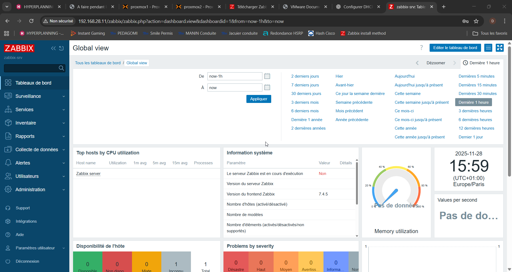

Mise en place d’un système de supervision (Zabbix)
Mise en place d’une solution de supervision avec Zabbix afin de surveiller l’état des serveurs et services et configurer des alertes pour détecter rapidement les incidents.
Bienvenue sur mon portfolio
BTS SIO • Option SISR • 2024–2026
Bienvenue sur mon portfolio ! Vous y trouverez mes projets, expériences et compétences en systèmes et réseaux ainsi que mes projets et expériences liés à mon cursus.
Je m'appelle Dinha HEYNEGEN, en deuxième année de BTS SIO option SISR à l'école INGETIS. Initialement en SLAM en première année, j'ai choisi de me réorienter vers SISR afin de me concentrer davantage sur les aspects systèmes et réseaux.
Je veux évoluer vers la cybersécurité et devenir pentester.
Le BTS Services Informatiques aux Organisations (SIO) est un diplôme de niveau Bac+2 qui forme des techniciens capables de concevoir, déployer et maintenir des solutions informatiques adaptées aux besoins des entreprises.
Il propose deux options : SISR (Solutions d'Infrastructure, Systèmes et Réseaux) et SLAM (Solutions Logicielles et Applications Métiers).
- Option SISR : axée sur les réseaux, systèmes, sécurité et administration. Elle forme des profils capables d'installer et maintenir un système d'information.
- Option SLAM : centrée sur le développement, les applications et les bases de données. Elle prépare à la création et la maintenance d'applications logicielles.
INGETIS
Université de Poitiers
Lycée Maurice Ravel

Mise en place d’une solution de supervision avec Zabbix afin de surveiller l’état des serveurs et services et configurer des alertes pour détecter rapidement les incidents.
Déploiement d’une solution VPN pour permettre un accès à distance sécurisé au réseau interne, avec chiffrement des communications et gestion des accès.
- Enrôlement et paramétrage des tablettes
- Assemblage des contenants (bornes WIFI, tablettes, câbles)
- Support utilisateur à distance (TeamViewer, Bureau à distance)
- Gestion des incidents et demandes via le logiciel de ticketing interne
- Installation et configuration de logiciels et machines (plieuses, lasers, poinçonneuses...)